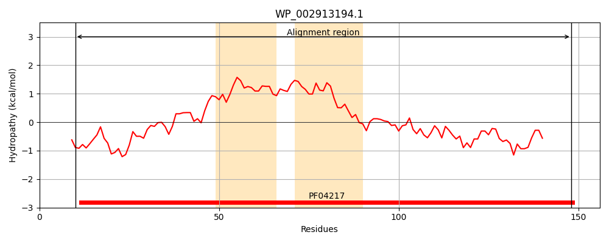
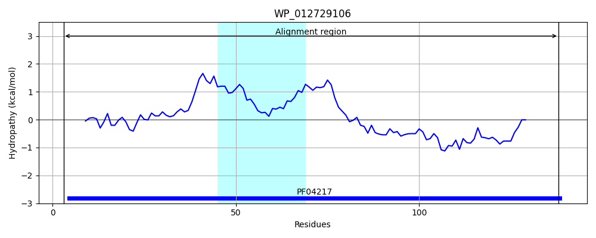
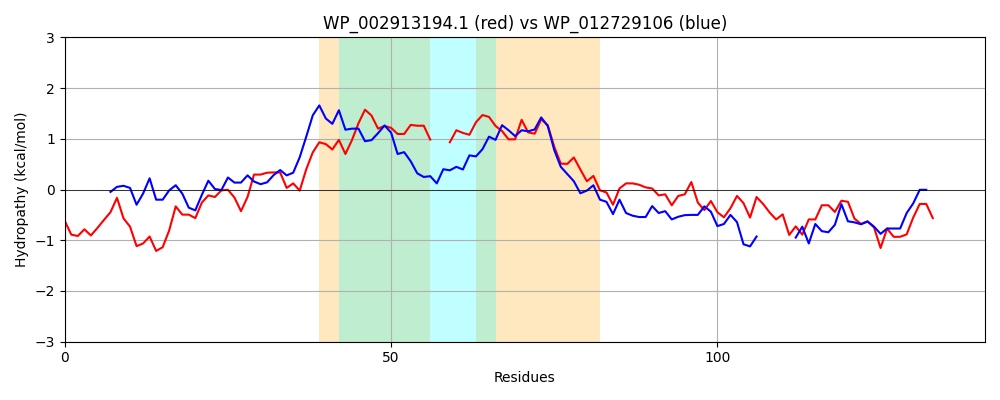

Hit Accession: WP_012729106
Hit TCID: 9.B.429.1.1
Hit Description: gnl|BL_ORD_ID|20818 gnl|TC-DB|WP_012729106.1|9.B.429.1.1 DUF412 domain-containing protein [Tolumonas auensis]
Mach Len: 141
e:0.000000
Query TMS Count : 2
Hit TMS Count: 1
TMS-Overlap Score: 1.050000
Predicted Substrates:None
BLAST Alignment:
Score: 272 , Bit scores: 109 bits, E-value: 1.8e-31, Alignment length: 141, Percentage identity: 40
Query: 10 SFFSLFNRGQHYAKTWPLDKRLAPVFIENRIIRATRYAIRIMPPIAIFTLCWQIALG--GQLGPAVATALFALSLPMQGLWWLGKRSVTPLPPSILNWFYEVRGKLQEAGQALAPVEGKPDYQALADTLKRAFKQLDKTFL 148
SF + +G Y+ WPL+ LA +F E RII + RI+P + + + C Q+ G +A +LFALSLP+QG +WLG+R+ T LPPS+ W++++ K+ AP +P Y LA TL++AF+QLD+ FL
Sbjct: 3 SFGKILTQGADYSAVWPLEPELANLFPEQRIIYLLNLSKRIIPALVVISGCLQVQWGYPANWPTFIAISLFALSLPVQGYYWLGRRAETLLPPSLSRWYFDINQKMN-----CAPSANRPSYFDLAKTLRKAFEQLDRVFL 138 | Protein Hydropathy Plots: |
|---|
|  |  |
Pairwise Alignment-Hydropathy Plot:
|
|---|
|  |